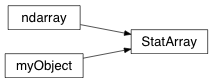

StatArray¶
-
class
geobipy.src.classes.core.StatArray.StatArray¶ Class extension to numpy.ndarray
This subclass to a numpy array contains extra attributes that can describe the parameters it represents. One can also attach prior and proposal distributions so that it may be used in an MCMC algorithm easily. Because this is a subclass to numpy, the StatArray contains all numpy array methods and when passed to an in-place numpy function will return a StatArray. See the example section for more information.
StatArray(shape, name=None, units=None, **kwargs)
Parameters: - shape (int or sequence of ints or array_like or StatArray) –
- If shape is int or sequence of ints : give the shape of the new StatArray e.g.,
2or(2, 3). All other arguments that can be passed to functions like numpy.zeros or numpy.arange can be used, see Other Parameters. - If shape is array_like : any object exposing the array interface, an object whose __array__ method returns an array, or any (nested) sequence. e.g.,
StatArray(numpy.arange(10))will cast the result into a StatArray and will maintain the properies passed through to that function. One could then attach the name, units, prior, and/or proposal through this interface too. e.g.,x = StatArray(numpy.arange(10,dtype=numpy.int), name='aTest', units='someUnits') - If shape is StatArray : the returned object is a deepcopy of the input. If name and units are specified with this option they will replace those parameters in the copy. e.g.,
y = StatArray(x, name='anotherTest')will be a deepcopy copy of x, but with a different name.
- If shape is int or sequence of ints : give the shape of the new StatArray e.g.,
- name (str, optional) – The name of the StatArray.
- units (str, optional) – The units of the StatArray.
Other Parameters: - dtype (data-type, optional) – The desired data-type for the array. Default is numpy.float64. Only used when shape is int or sequence of ints. The data type could also be a class.
- buffer (object exposing buffer interface, optional) – Used to fill the array with data. Only used when shape is int or sequence of ints.
- offset (int, optional) – Offset of array data in buffer. Only used when shape is int or sequence of ints.
- strides (tuple of ints, optional) – Strides of data in memory. Only used when shape is int or sequence of ints.
- order ({‘C’, ‘F’, ‘A’}, optional) – Specify the order of the array. If order is ‘C’, then the array will be in C-contiguous order (rightmost-index varies the fastest). If order is ‘F’, then the returned array will be in Fortran-contiguous order (leftmost-index varies the fastest). If order is ‘A’ (default), then the returned array may be in any order (either C-, Fortran-contiguous, or even discontiguous), unless a copy is required, in which case it will be C-contiguous. Only used when shape is int or sequence of ints.
Returns: out – Extension to numpy.ndarray with additional attributes attached.
Return type: Raises: TypeError– If name is not a str.TypeError– If units is not a str.
Notes
When the StatArray is passed through a numpy function, the name and units are maintained in the new object. Any priors or proposals are not kept for two reasons. a) keep computational overheads low, b) assume that a possible change in size or meaning of a parameter warrants a change in any attached distributions.
Examples
Since the StatArray is an extension to numpy, all numpy attached methods can be used.
>>> from geobipy import StatArray >>> import numpy as np >>> x = StatArray(np.arange(10), name='test', units='units') >>> print(x.mean()) 4.5
If the StatArray is passed to a numpy function that does not return a new instantiation, a StatArray will be returned (as opposed to a numpy array)
>>> np.delete(x, 5) StatArray([0, 1, 2, 3, 4, 6, 7, 8, 9])
However, if you pass a StatArray to a numpy function that is not in-place, i.e. creates new memory, the return type will be a numpy array and NOT a StatArray subclass
>>> np.append(x,[3,4,5]) array([0, 1, 2, ..., 3, 4, 5])
See also
geobipy.src.classes.statistics.Distribution- For possible prior and proposal distributions
-
Bcast(world, root=0)¶ Broadcast the StatArray to every rank in the MPI communicator.
Parameters: - world (mpi4py.MPI.Comm) – The MPI communicator over which to broadcast.
- root (int, optional) – The rank from which to broadcast. Default is 0 for the master rank.
Returns: out – The broadcast StatArray on every rank in the MPI communicator.
Return type:
-
Irecv(source, world)¶
-
IrecvFromLeft(world, wrap=True)¶ Irecv an array from the rank left of world.rank.
-
IrecvFromRight(world, wrap=True)¶ IRecv an array from the rank right of world.rank.
-
Isend(dest, world)¶
-
IsendToLeft(world)¶ ISend an array to the rank left of world.rank.
-
IsendToRight(world)¶ ISend an array to the rank right of world.rank.
-
Scatterv(starts, chunks, world, axis=0, root=0)¶ Scatter variable lengths of the StatArray using MPI
Takes the StatArray and gives each core in the world a chunk of the array.
Parameters: - starts (array of ints) – 1D array of ints with size equal to the number of MPI ranks. Each element gives the starting index for a chunk to be sent to that core. e.g. starts[0] is the starting index for rank = 0.
- chunks (array of ints) – 1D array of ints with size equal to the number of MPI ranks. Each element gives the size of a chunk to be sent to that core. e.g. chunks[0] is the chunk size for rank = 0.
- world (mpi4py.MPI.Comm) – The MPI communicator over which to Scatterv.
- axis (int, optional) – This axis is distributed amongst ranks.
- root (int, optional) – The MPI rank to ScatterV from. Default is 0.
Returns: out – The StatArray distributed amongst ranks.
Return type:
-
abs()¶ Take the absolute value. In-place operation.
Returns: out – Absolute value Return type: StatArray
-
append(values, axis=0)¶ Append to a StatArray
Appends values the end of a StatArray. Be careful with repeated calls to this method as it can be slow due to reallocating memory.
Parameters: values (scalar or array_like) – Numbers to append Returns: out – Appended StatArray Return type: StatArray
-
bar(x=None, i=None, **kwargs)¶ Plot the StatArray as a bar chart.
The values in self are the heights of the bars. Auto labels it if x has type geobipy.StatArray
Parameters: - x (array_like or StatArray, optional) – The horizontal locations of the bars
- i (sequence of ints, optional) – Plot the ith indices of self, against the ith indices of x.
Returns: matplotlib .Axes
Return type: ax
See also
matplotlib.pyplot.bar()- For additional keyword arguments you may use.
-
copy(order='C')¶ Return a copy of the array.
Parameters: order ({'C', 'F', 'A', 'K'}, optional) – Controls the memory layout of the copy. ‘C’ means C-order, ‘F’ means F-order, ‘A’ means ‘F’ if a is Fortran contiguous, ‘C’ otherwise. ‘K’ means match the layout of a as closely as possible. (Note that this function and numpy.copy()are very similar, but have different default values for their order= arguments.)See also
numpy.copy(),numpy.copyto()Examples
>>> x = np.array([[1,2,3],[4,5,6]], order='F')
>>> y = x.copy()
>>> x.fill(0)
>>> x array([[0, 0, 0], [0, 0, 0]])
>>> y array([[1, 2, 3], [4, 5, 6]])
>>> y.flags['C_CONTIGUOUS'] True
-
createHdf(h5obj, myName, nRepeats=None, fillvalue=None)¶ Create the Metadata for a StatArray in a HDF file
Creates a new group in a HDF file under h5obj. A nested heirarchy will be created e.g., myNamedata, myNameprior, and myNameproposal. This method can be used in an MPI parallel environment, if so however, a) the hdf file must have been opened with the mpio driver, and b) createHdf must be called collectively, i.e., called by every core in the MPI communicator that was used to open the file. In order to create large amounts of empty space before writing to it in parallel, the nRepeats parameter will extend the memory in the first dimension.
Parameters: - h5obj (h5py._hl.files.File or h5py._hl.group.Group) – A HDF file or group object to create the contents in.
- myName (str) – The name of the group to create.
- nRepeats (int, optional) – Inserts a first dimension into the shape of the StatArray of length nRepeats. This can be used to extend the available memory of the StatArray so that multiple MPI ranks can write to their respective parts in the extended memory.
- fillvalue (number, optional) – Initializes the memory in file with the fill value
Notes
This method can be used in serial and MPI. As an example in MPI. Given 10 MPI ranks, each with a 10 length array, it is faster to create a 10x10 empty array, and have each rank write its row. Rather than creating 10 separate length 10 arrays because the overhead when creating the file metadata can become very cumbersome if done too many times.
Example
>>> from geobipy import StatArray >>> from mpi4py import MPI >>> import h5py
>>> world = MPI.COMM_WORLD
>>> x = StatArray(4, name='test', units='units') >>> x[:] = world.rank
>>> # This is a collective open of data in the file >>> f = h5py.File(fName,'w', driver='mpio',comm=world) >>> # Collective creation of space(padded by number of mpi ranks) >>> x.createHdf(f, 'x', nRepeats=world.size)
>>> world.barrier()
>>> # In a non collective region, we can write to different sections of x in the file >>> # Fake a non collective region >>> def noncollectivewrite(x, file, world): >>> # Each rank carries out this code, but it's not collective. >>> x.writeHdf(file, 'x', index=world.rank) >>> noncollectivewrite(x, f, world)
>>> world.barrier() >>> f.close()
-
delete(i, axis=None)¶ Delete elements
Parameters: - i (slice, int or array of ints) – Indicate which sub-arrays to remove.
- axis (int, optional) – The axis along which to delete the subarray defined by obj. If axis is None, obj is applied to the flattened array.
Returns: out – Deepcopy of StatArray with deleted entry(ies).
Return type:
-
edges(min=None, max=None)¶ Get the midpoint values between elements in the StatArray
Returns an size(self) + 1 length StatArray of the midpoints between each element. The first and last element are projected edges based on the difference between first two and last two elements in self. edges[0] = self[0] - 0.5 * (self[1]-self[0]) edges[-1] = self[-1] + 0.5 * (self[-1] - self[-2]) If min and max are given, the edges are fixed and not calculated.
Parameters: - min (float, optional) – Fix the leftmost edge to min.
- max (float, optional) – Fix the rightmost edge to max.
Returns: out – Edges of the StatArray
Return type:
-
firstNonZero(axis=0, invalid_val=-1)¶ Find the indices of the first non zero values along the axis.
Parameters: axis (int) – Axis along which to find first non zeros. Returns: out – Indices of the first non zero values. Return type: array_like
-
fromHdf(h5grp, index=None)¶ Read the StatArray from a HDF group
Given the HDF group object, read the contents into a StatArray.
Parameters: - h5obj (h5py._hl.group.Group) – A HDF group object to write the contents to.
- index (slice, optional) – If the group was created using the nRepeats option, index specifies the index’th entry from which to read the data.
-
gMM(clusterID, trainPercent=75.0, covType=['spherical'], plot=True)¶ Use a Gaussian Mixing Model to classify the data. clusterID is the initial assignment of the rows to their clusters
-
getName()¶ Get the name of the StatArray
If the name has not been attached, returns an empty string
Returns: out – The name of the StatArray. Return type: str
-
getNameUnits()¶ Get the name and units
Gets the name and units attached to the StatArray. Units, if present are surrounded by parentheses
Returns: out – String containing name(units). Return type: str
-
getUnits()¶ Get the units of the StatArray
If the units have not been attached, returns an empty string
Returns: out – The unist of the StatArray Return type: str
-
hasLabels()¶
-
hasPrior()¶ Check that the StatArray has an attached prior.
Returns: out – Has an attached prior. Return type: bool
-
hasProposal()¶ Check that the StatArray has an attached proposal.
Returns: out – Has an attached proposal. Return type: bool
-
hdfName()¶ Create a string that describes class instantiation
Returns a string that should be used as an attr[‘repr’] in a HDF group. This allows reading of the attribute from the hdf file, evaluating it to return an object, and then reading the hdf contents via the object’s methods.
Returns: str Return type: out
-
hist(bins=10, range=None, normed=None, weights=None, density=None, **kwargs)¶ Plot a histogram of the StatArray
Plots a histogram, estimates the mean and standard deviation and overlays the PDF of a normal distribution with those values, if density=1.
See also
geobipy.customPlots.hist()- For geobipy additional arguments
matplotlib.pyplot.hist()- For histogram related arguments
Example
>>> from geobipy import StatArray >>> import numpy as np >>> import matplotlib.pyplot as plt >>> x = StatArray(np.random.randn(1000), name='name', units='units') >>> plt.figure() >>> x.hist() >>> plt.show()
-
insert(i, values, axis=0)¶ Insert values
Parameters: - i (int, slice or sequence of ints) – Object that defines the index or indices before which values is inserted.
- values (array_like) – Values to insert into arr. If the type of values is different from that of arr, values is converted to the type of arr. values should be shaped so that
arr[...,obj,...] = valuesis legal. - axis (int, optional) – Axis along which to insert values. If axis is None then arr is flattened first.
Returns: out – StatArray after inserting a value.
Return type:
-
internalEdges()¶ Get the midpoint values between elements in the StatArray
Returns an size(self) + 1 length StatArray of the midpoints between each element
Returns: out – Edges of the StatArray Return type: StatArray
-
isRegular()¶ Checks that the values change regularly
Returns: out – Is regularly changing. Return type: bool
-
kMeans(nClusters, standardize=False, nIterations=10, plot=False, **kwargs)¶ Perform K-Means clustering on the StatArray
-
lastNonZero(axis=0, invalid_val=-1)¶ Find the indices of the first non zero values along the axis.
Parameters: axis (int) – Axis along which to find first non zeros. Returns: out – Indices of the first non zero values. Return type: array_like
-
pad(N)¶ Copies the properties of a StatArray including all priors or proposals, but pads everything to the given size
Parameters: N (int) – Size to pad to. Returns: StatArray Return type: out
-
pcolor(x=None, y=None, **kwargs)¶ Create a pseudocolour plot of the StatArray array, Actually uses pcolormesh for speed.
If the arguments x and y are geobipy.StatArray classes, the axes can be automatically labelled. Can take any other matplotlib arguments and keyword arguments e.g. cmap etc.
Parameters: Other Parameters: - alpha (scalar or arrya_like, optional) – If alpha is scalar, behaves like standard matplotlib alpha and opacity is applied to entire plot If array_like, each pixel is given an individual alpha value.
- log (‘e’ or float, optional) – Take the log of the colour to a base. ‘e’ if log = ‘e’, and a number e.g. log = 10. Values in c that are <= 0 are masked.
- equalize (bool, optional) – Equalize the histogram of the colourmap so that all colours have an equal amount.
- nbins (int, optional) – Number of bins to use for histogram equalization.
- xscale (str, optional) – Scale the x axis? e.g. xscale = ‘linear’ or ‘log’
- yscale (str, optional) – Scale the y axis? e.g. yscale = ‘linear’ or ‘log’.
- flipX (bool, optional) – Flip the X axis
- flipY (bool, optional) – Flip the Y axis
- grid (bool, optional) – Plot the grid
- noColorbar (bool, optional) – Turn off the colour bar, useful if multiple customPlots plotting routines are used on the same figure.
- trim (bool, optional) – Set the x and y limits to the first and last non zero values along each axis.
Returns: matplotlib .Axes
Return type: ax
See also
matplotlib.pyplot.pcolormesh()- For additional keyword arguments you may use.
-
perturb(i=None, relative=False)¶ Perturb the values of the StatArray using the attached proposal
The StatArray must have had a proposal set using StatArray.setProposal()
Parameters: - i (slice or int or sequence of ints, optional) – Index or indices of self that should be perturbed.
- relative (bool) – Update the StatArray relative to the current values or assign the new samples to the StatArray.
Raises: TypeError– If the proposal has not been set
-
plot(x=None, i=None, axis=0, **kwargs)¶ Plot self against x
If x and y are StatArrays, the axes are automatically labelled.
Parameters: - x (array_like or StatArray) – The abcissa
- i (sequence of ints, optional) – Plot the ith indices of self, against the ith indices of x.
- axis (int, optional) – If self is 2D, plot values along this axis.
- log ('e' or float, optional) – Take the log of the colour to a base. ‘e’ if log = ‘e’, and a number e.g. log = 10. Values in c that are <= 0 are masked.
- xscale (str, optional) – Scale the x axis? e.g. xscale = ‘linear’ or ‘log’.
- yscale (str, optional) – Scale the y axis? e.g. yscale = ‘linear’ or ‘log’.
- flipX (bool, optional) – Flip the X axis
- flipY (bool, optional) – Flip the Y axis
- labels (bool, optional) – Plot the labels? Default is True.
Returns: matplotlib .Axes
Return type: ax
See also
matplotlib.pyplot.plot()- For additional keyword arguments you may use.
-
prepend(values, axis=0)¶ Prepend to a StatArray
Prepends numbers to a StatArray, Do not use this too often as it is quite slow
Parameters: values (scalar or array_like) – A number to prepend. Returns: out – StatArray with prepended values. Return type: StatArray
-
prior¶ Returns the prior if available.
-
probability(*args, i=None)¶ Evaluate the probability of the values in self using the attached prior distribution
Parameters: - arg1 (array_like, optional) – Will evaluate the probability of the numbers in the arg1 using the prior attached to self
- i (slice or int or sequence of ints, optional) – Index or indices of self that should be evaluated.
Returns: numpy.float
Return type: out
Raises: TypeError– If the prior has not been set
-
proposal¶ Returns the prior if available.
-
resize(new_shape)¶ Resize a StatArray
Resize a StatArray but copy over any attached attributes
Parameters: new_shape (int or tuple of ints) – Shape of the resized array Returns: out – Resized array. Return type: StatArray See also
numpy.resize()- For more information.
-
rolling(numpyFunction, window=1)¶
-
scatter(x=None, y=None, i=None, **kwargs)¶ Create a 2D scatter plot.
Create a 2D scatter plot, if the y values are not given, the colours are used instead. If the arrays x, y, and c are geobipy.StatArray classes, the axes are automatically labelled. Can take any other matplotlib arguments and keyword arguments e.g. markersize etc.
Parameters: - x (1D array_like or StatArray) – Horizontal locations of the points to plot
- c (1D array_like or StatArray) – Colour values of the points
- y (1D array_like or StatArray, optional) – Vertical locations of the points to plot, if y = None, then y = c.
- i (sequence of ints, optional) – Plot a subset of x, y, c, using the indices in i.
See also
geobipy.customPlots.Scatter2D()- For additional keyword arguments you may use.
-
setPrior(distributionType, *args, **kwargs)¶ Set a prior distribution
Sets a prior by interfacing through the Distribution method rather than passing any subclasses of the baseDistribution class.
Parameters: - distributionType (str) – The name of the distribution to set.
- *args – Variable length argument list.
- **kwargs – Arbitrary keyword arguments.
See also
geobipy.src.classes.statistics.Distribution()- For available distributions to instantiate.
-
setProposal(distributionType, *args, **kwargs)¶ Set a proposal distribution
Sets a proposal by interfacing through the Distribution method rather than passing any subclasses of the baseDistribution class.
Parameters: - distributionType (str) – The name of the distribution to set
- *args – Variable length argument list.
- **kwargs – Arbitrary keyword arguments.
See also
geobipy.src.classes.statistics.Distribution()- For available distributions to instantiate
-
stackedAreaPlot(x=None, i=None, axis=0, labels=[], colors=['#000000', '#FFFF00', '#1CE6FF', '#FF34FF', '#FF4A46', '#008941', '#006FA6', '#A30059', '#FFDBE5', '#7A4900', '#0000A6', '#63FFAC', '#B79762', '#004D43', '#8FB0FF', '#997D87', '#5A0007', '#809693', '#FEFFE6', '#1B4400', '#4FC601', '#3B5DFF', '#4A3B53', '#FF2F80', '#61615A', '#BA0900', '#6B7900', '#00C2A0', '#FFAA92', '#FF90C9', '#B903AA', '#D16100', '#DDEFFF', '#000035', '#7B4F4B', '#A1C299', '#300018', '#0AA6D8', '#013349', '#00846F', '#372101', '#FFB500', '#C2FFED', '#A079BF', '#CC0744', '#C0B9B2', '#C2FF99', '#001E09', '#00489C', '#6F0062', '#0CBD66', '#EEC3FF', '#456D75', '#B77B68', '#7A87A1', '#788D66', '#885578', '#FAD09F', '#FF8A9A', '#D157A0', '#BEC459', '#456648', '#0086ED', '#886F4C', '#34362D', '#B4A8BD', '#00A6AA', '#452C2C', '#636375', '#A3C8C9', '#FF913F', '#938A81', '#575329', '#00FECF', '#B05B6F', '#8CD0FF', '#3B9700', '#04F757', '#C8A1A1', '#1E6E00', '#7900D7', '#A77500', '#6367A9', '#A05837', '#6B002C', '#772600', '#D790FF', '#9B9700', '#549E79', '#FFF69F', '#201625', '#72418F', '#BC23FF', '#99ADC0', '#3A2465', '#922329', '#5B4534', '#FDE8DC', '#404E55', '#0089A3', '#CB7E98', '#A4E804', '#324E72', '#6A3A4C'], **kwargs)¶ Create stacked area plot where column elements are stacked on top of each other.
Parameters: - x (array_like or StatArray) – The abcissa.
- i (sequence of ints, optional) – Plot a subset of x, y, c, using the indices in i.
Other Parameters: - axis (int) – Plot along this axis, stack along the other axis.
- labels (list of str, optional) – The labels to assign to each column.
- colors (matplotlib.colors.LinearSegmentedColormap or list of colours) – The colour used for each column.
- xscale (str, optional) – Scale the x axis? e.g. xscale = ‘linear’ or ‘log’.
- yscale (str, optional) – Scale the y axis? e.g. yscale = ‘linear’ or ‘log’.
Returns: matplotlib .Axes
Return type: ax
See also
matplotlib.pyplot.scatterplot()- For additional keyword arguments you may use.
-
summary(out=False)¶ Write a summary of the StatArray
Parameters: out (bool) – Whether to return the summary or print to screen Returns: out – Summary of StatArray Return type: str, optional
-
toHdf(h5obj, myName)¶ Write the StatArray to an HDF object
Creates and writes a new group in a HDF file under h5obj. A nested heirarchy will be created e.g., myNamedata, myNameprior, and myNameproposal. This function modifies the file metadata and writes the contents at the same time and should not be used in a parallel environment.
Parameters: - h5obj (h5py._hl.files.File or h5py._hl.group.Group) – A HDF file or group object to write the contents to.
- myName (str) – The name of the group to write the StatArray to.
Examples
>>> import h5py >>> from geobipy.src.classes.core.StatArray import StatArray >>> import numpy as np >>> x = StatArray(np.arange(10)) >>> with h5py.File('test','w') as f: >>> x.toHdf(f, 'aTestGroup')
-
verbose()¶ Explicit print of every element
-
writeHdf(h5obj, myName, index=None)¶ Write the values of a StatArray to a HDF file
Writes the contents of the StatArray to an already created group in a HDF file under h5obj. This method can be used in an MPI parallel environment, if so however, the hdf file must have been opened with the mpio driver. Unlike createHdf, writeHdf does not have to be called collectively, each rank can call writeHdf independently, so long as they do not try to write to the same index.
Parameters: - h5obj (h5py._hl.files.File or h5py._hl.group.Group) – A HDF file or group object to write the contents to.
- myName (str) – The name of the group to write to. The group must have been created previously.
- index (int, optional) – If the group was created using the nRepeats option, index specifies the index’th entry at which to write the data
Example
>>> from geobipy import StatArray >>> from mpi4py import MPI >>> import h5py
>>> world = MPI.COMM_WORLD
>>> x = StatArray(4, name='test', units='units') >>> x[:] = world.rank
>>> # This is a collective open of data in the file >>> f = h5py.File(fName,'w', driver='mpio',comm=world) >>> # Collective creation of space(padded by number of mpi ranks) >>> x.createHdf(f, 'x', nRepeats=world.size)
>>> world.barrier()
>>> # In a non collective region, we can write to different sections of x in the file >>> # Fake a non collective region >>> def noncollectivewrite(x, file, world): >>> # Each rank carries out this code, but it's not collective. >>> x.writeHdf(file, 'x', index=world.rank) >>> noncollectivewrite(x, f, world)
>>> world.barrier() >>> f.close()
- shape (int or sequence of ints or array_like or StatArray) –